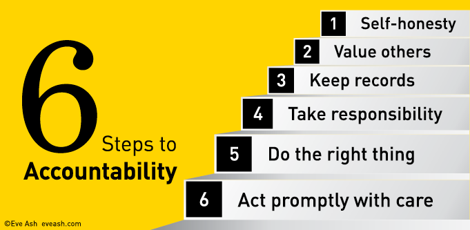
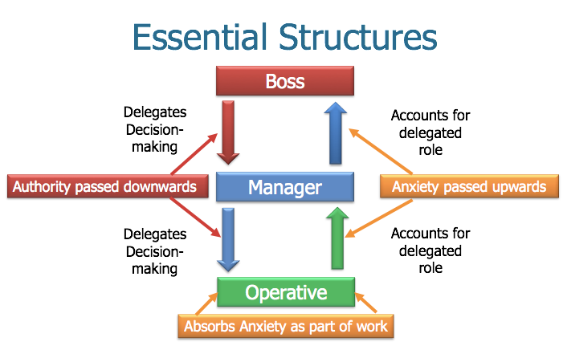
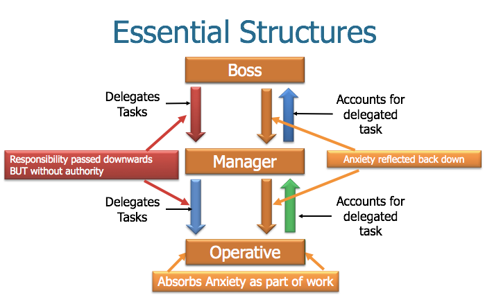

I don't know about this hierarchy, but I do like the idea that the most important foundation is self-honesty.Below is an essay I wrote in late 2018 but it wasn't published on the Mandarin till a year ago. I should have published it here, but don't seem to have. It's the 'prequel' to – the problematic from which comes – the case for the Evaluator General.
“The first principle is that you must not fool yourself and you are the easiest person to fool” - Richard Feynman
"The most damaging thing you learned in school wasn't something you learned in any specific class. It was learning to get good grades". Paul Graham
In traditional organisations -- and in the public sector -- it seems self-evident that accountability is imposed by those with authority upon those whom they’re holding to account. In a hierarchy that means those above impose accountability on those below.
I have my doubts. Accountability is straightforward enough when there's good information flow. You find out how many units were processed on the line in a one hour period, check the quality of the work, allow for costs and there's your accountability.
But unless those above know precisely what they want from those below, and can measure it perfectly, things break down because those holding others accountable typically need to rely on information provided by those being held accountable. In the jargon, that gives rise to ‘asymmetric information’.
Now I've expressed the problem simply – from the economic textbook. You could be forgiven for thinking that I’m saying that those at the bottom will cover things up, pretend things are OK when they're not. That possibility shouldn't be ignored. But the problem goes far deeper – for various reasons I’ve arranged under the sub-headings that follow.
Accountability, power and multiple objectives
Whether they’re politicians or senior bureaucrats, those at the top who impose ‘performance regimes’ on their underlings are, by so doing, themselves performing – in this case their own role of holding others to account.1 The performance regimes they impose will meet their needs. They'll keep in mind the 'front page test': “How will this look on the front page of the morning paper?” The very thought often generates institutional imperatives that overwhelm the niceties of official metrics. In a child protection agency, the front page test dictates that no effort be spared to prevent child abuse or neglect that the agency might have prevented being publicly exposed. When such a thing is exposed, ‘accountability’ may involve someone taking the fall whatever the merits of the situation might call for.
However, even in the absence of such troubles, the system will always be managing multiple objectives. For instance, the agency must also respect parents’ rights and reasonable expectations of due process. Where judicial authority is sought to remove a child, that approval might be difficult, unpredictable and costly to obtain. So the agency must choose between difficult alternatives.
British management psychotherapist Philip Stokoe offers useful insights here. In his model of a functional organisation, demands are passed down the line of management along with the authority to meet them. And this generates tensions and anxieties as underlings navigate the organisation's multiple objectives down to the 'street-level'. For the organisation to remain psychologically healthy and practically effective, that anxiety must then travel back up the line for resolution to at least the lowest level of the organisation with the authority to resolve them (See Fig. 1).
Figure 1: A healthy organisation

See “Problems with Organisations” at https://vimeo.com/239467367 at 16.13As Stokoe puts it engagingly, if these encounters up and down the line “can be approached from a perspective of benign enquiry … then we have created the organisational equivalent of thinking!”
But consider the tensions facing the agency just described. Resolving the tensions thrown up by the conflicting demands imposed on it poses hard choices. And as Herbert Simon puts it, "a choice between undesirables is a dilemma, something to be avoided or evaded".2 If strong and ethical leadership is not encountered as the anxiety is passed upwards, it festers unresolved, generating learned helplessness below and dysfunction throughout the organisation (See Fig 2).
Figure 2: An unhealthy organisation

See “Problems with Organisations” at https://vimeo.com/239467367 at 19.43One could multiply these examples at will. Numerous agencies must perform whilst constraints on their ability to do so multiply. Schools will be required to discipline students in the face of proliferating policies protecting children’s rights and prohibiting certain previously accepted disciplinary routines. Attractive seeming policies involving, for instance, deinstitutionalising the mentally or physically disabled are embraced without adequate resourcing. The same occurs in prisons, hospitals, police services and so on.
This is before we even mention the always vexed issue of budgeting. If these dilemmas are poorly handled, the organisational culture is likely to veer towards low-trust, low-performance patterns of learned helplessness in which participants responsibility onto others rather than collaboratively engaging with issues on their merits.
Accountability theatre and Archimedes’ regress
I learned of Archimedes saying “give me a platform on which to stand and I shall move the earth” in primary school. I took it to embody the intoxicating power of Archimedes insight into leverage. Today I read it with a tragic dimension. However much we hanker to change the world, we can never stand outside it to give ourselves the perspective, let alone the leverage.
Often appeals to accountability imposed on systems from above operate as if it is possible to will some external leverage upon a bureaucratic system when there is no place to stand. Thus for instance ‘freedom of information’ requirements transform incentives throughout the management hierarchy. Truth-telling will suffer some mix of self-censorship, euphemism and going “off the record”. Freedom of information regulation may still be worthwhile but only as the lesser of two evils.
And often, accountability requirements are imposed in form but not substance. Thus, for instance ‘regulation review’ disciplines have been imposed to constrain agencies’ to regulate according to clear cost-benefit considerations. But they don't. Though, after over three decades in action, the policy is de rigueur throughout the western world, its achievements are modest if not nugatory. Bureaucracy and politics rewards ‘can do’ types, so boxes are ticked and the letter of the policy is obeyed, but not its spirit.
Nevertheless this kind of ‘accountability theatre’ does give politicians and the bureaucratic system over which they preside, a way of embodying what we might call the spirit of Lord Acton. It was Acton who described rowing as the perfect preparation for public life: enabling one to face in one direction, whilst travelling in the other. So it is that the system of accountability to prevent over-regulation enables our politicians to regulate as they wish in particular instances, whilst inveighing against over-regulation in general.
The results are as we might expect. As Amble and Chittenden put it in a report in Britain over a decade ago, when in power both sides “approach deregulation … with enthusiasm, learn little or nothing from previous efforts, and have little if anything to show from each initiative”.3 A place is set up putatively independent of the system to which it must be accountable. But somehow we’re in Archimedes regress. As accountabilities are imposed from above, the new system nevertheless replicates the institutional imperatives it was intended to overcome.
Governance is not enough
Even though one can imagine some such external body, somehow what we’re after doesn’t materialise, as the system heads for an equilibrium of lower energy and skill than was intended. Thus for instance, Australia’s Productivity Commission – a relatively independent agency operating under its own Act – administered regulation review for over a decade before 2007. But it was no more successful, nor it has to be admitted, enthusiastic in delivering on the objectives of regulation review than its ministerially directed successor, the Department of Finance.
Part of the reason for this is that if we are to improve the quality of our regulation, that requires attention to the micro-detail. But this micro-detail inevitably gets lost as lines of accountability taper towards the top. The wider commentariat is locked into the same conundrum. When the Business Council of Australia wanted to weigh in against over-regulation, it got Access Economics to do a report on the state of play. But, owing to the vast bulk of existing regulation, Access couldn’t directly assess its quality. So it went to the accountability and regulatory regime governing regulation and assessed that. You can see the infinite regress here. It took the Office of Best Practice’s and the OECD’s manuals as a benchmark and improvised some of criteria against which to compare each of the Australian States’ regulation review regimes. And it got a story run in the press about over-regulation which, it seems reasonable to assume, was a central objective of the exercise. But we learned little about specific regulation or how to improve it. Expect a rinse and repeat some time soon.
Accountability theatre, information asymmetry and ignorance
The deepest conundrum of accountability however is our ignorance. Those in the Education Department know that their job is to educate students as cost-effectively as possible. There’s just a great deal they need to learn about how to do it. The same goes mutatis mutandis for policing, health services, town planning, child protection, counterterrorism, defence, emergency services, indeed pretty much any sophisticated service.4
Be that as it may, often rightly and sometimes wrongly, practitioners have some idea of what good practice is. So whole organisations are built seeking to deliver it. And that quest cannot be sensibly pursued without an accountability regime of some kind. And so those in the organisation agree on Key Performance Indicators (KPIs). In my experience they’re often set by relatively senior people sometimes consulting with more junior people, but generally without much reflection. Often KPIs will be framed with senior managers’ ‘comms’ needs closely in mind: to their political master and/or to the public.
Even if KPIs were designed with scrupulous care and involvement throughout an organisation, from the moment they’d been agreed the theatre of accountability would loom large. KPIs should always be provisional and subject to revision. But setting them will end the matter for many. Remember, the minister is out there on TV defending her government’s performance. If she’s Education Minister, people will be asking her about teachers employed both absolutely and per student, test scores, truancy, dollars spent in various activities, dollars spent per student, real growth in spending per activity and so on. If she’s Minister for Police she’ll want to know about the number of cops on the beat, crime rates and so on. In all this, the Opposition and the media will be after their gotcha moments to advance their respective causes, the former in undermining the government, the other in optimising clicks on websites.
The senior Education bureaucrats can point to the way they're imposing objective testing on school students, measuring and dishing out punishments and rewards on the lab rats people running things lower down the system. Underperforming schools will be closed down, successful ones expanded. The theatre of accountability takes on a life of its own. Should these incentives be meted out to school headmasters, to schools, to subject departments or individual teachers? There’s no good, simple answer to these questions. And presuming the system responds to poor performance with support to improve initially – as human decency and organisational experience suggest it should – at what stage should it throw the switch to penalties? That’s not an easy question either.
At least some KPIs will contain important information. Children’s scores on standardised tests could easily be important information. But it will be fragmentary information which fails to tell us other important things we’d like to know – most obviously the extent to which a school is conferring wider benefits on its children in helping them acquire non-cognitive skills and moving beyond the limitations of their own home environment. These KPIs will also unleash perverse incentives to game the system – most particularly to ‘teach to the test’ and drill students in exam technique or even outright cheating.
Perhaps more importantly still, there is little reason to expect these KPIs to give us high quality insights about what’s working well and what’s not, or usually even basic causal information. Is declining performance in one school a product of poor teaching, other deficiencies in the school or because of changes in that school’s environment? And if we knew the answers to those questions, what are the best strategies in the current situation to improve performance? One can imagine myriad subsidiary questions about how other parts of the system might reinforce or undermine educational goals and objectives – parental input, timetabling, educational technology, student wellbeing and public health including mental health, compensating for socio-economic disadvantage and so on.
Systems like education, health and policing are often in the frontline of emerging social problems. Employers will not hire people if their drug abuse disables them from productive work, but it’s less easy for schools to pass the buck. Yet if they do and expel a student, the police really can’t pass the burden of such problems onto others. They’re there as our first line of defence. And so they’ll be drawn into these issues. Will their KPIs and other information systems enable us to hold them to account? Would those KPIs help generate insights for them or for us as to how to deal cost-effectively with such wider forces? It seems unlikely. And yet our ideas of ‘accountability’ seem to presuppose this or somehow hanker for it.
Accountability and motivation
One feature of the models of accountability explored here is their orientation around imposing the view from above on those lower down and the subtle contradictions and dilemmas to which this leads. Most people governed by regulation review regimes, most of those funded by government and reporting KPIs back up the line to senior government managers have important information not normally known by agency heads. And they’re generally well disposed to doing a good job. And yet the frustrations and imperatives of those at the top – legitimate or otherwise – dominate the process of accountability and information flow.
Elaborate mechanisms are established which often presuppose the need for managers to detect and punish the poor performance of those below, but which actually lead to a set of practices that never really come to grips with the issues. You'd think that, after over thirty years of false starts on regulation review, the system would have more to say about the extent to which its working or, if I’m right, why it's not working. But it's caught in an endless do-loop of role-play more comfortable for those at the top than it is for those warding off the daily anxieties of their ultimately futile role administering it in the field. You’d think that the information systems we have in our schools would shed more light on what works and why.
In a sense, this essay is a ‘prequel’. It revisits and more carefully articulates the thinking that led me to propose a new means of finessing these dilemmas. But by way of preparation I offer some observations on the management revolution Toyota unleashed on its competitors from the 1960s on. This system is predicated not on managers’ need to impose ‘accountability’ on those underneath them, but rather on the more difficult task of drawing in the enthusiastic contributions of all, particularly those on the line and within supplier firms. Thus, where Toyota's American peers, Ford and GM, reserved the design, engineering and operations management to those at the centre of the organisation and used fairly crude market forces to elicit acceptable performance at minimum cost – by paying piece rates to workers and tendering out external supply to the lowest bidders –Toyota sought to encourage and reward good work.
They cultivated long-term loyalty between themselves and their suppliers to encourage them to invest and excel. They presumed that
- their employees sought to do a good day’s work rather than shirk,
- that these motivations are especially strong in teams and that
- management’s responsibility therefore, was to provide the resources to support them.
There is a further prize. Pride in what one is doing, and increasing skill, insight and autonomy in doing it builds a powerful intrinsic motivation in the work in which accountability is first and foremost to oneself to do a good job – with the resulting machinery of measurement and its output relatively easily adopted by management for higher-level accountability thus finessing all the incentive incompatibilities, tensions and gaming otherwise arising from holding people to account using data they themselves supply.
The Toyota Production System
Toyota revolutionised factory production by taking Henry Ford’s ideas about eliminating waste further even than he had. The factory system had hitherto been one in which essential knowledge work was done by engineers and managers at the apex of the organisation with instructions sent down the line. Here middle managers’ task was minimising the cost of following engineers’ master plans.
Factory workers were unskilled and rewarded by piece rates. Likewise, external supply came from suppliers who could satisfy the assemblers’ design and specifications at least cost. Toyota revolutionised this approach. They outspent Western firms on employee training by an order of magnitude and trained production workers in statistical control. Rather than pushing them to keep up with production lines over which they had no control, they were organised into cooperative teams empowered with statistical control skills and tools. They would endlessly optimise their productivity in ‘quality circle’ meetings within and between teams.
The Toyota system might be thought of as a socio-technical system. Built on the mechanisms of statistical control it nevertheless presupposed an optimistic view of workers’ motivation to do a good job. Further, the language with which the system was introduced and maintained was highly rhetorical with shop floors festooned with slogans asserting the significance of everyone’s contribution and everyone’s presumed desire to contribute their best. The system was designed to foster and support each worker’s intrinsic motivation and build an accountability system from the ground up around it.
Footnotes
1. As Jakobsen et all argue: Public organizations must account for performance, … and performance metrics are politically viewed as a legitimate and necessary way of doing so. Jakobsen, M.L., Baekgaard, M., Moynihan, D.P. and van Loon, N., 2017. Making sense of performance regimes: Rebalancing external accountability and internal learning. Perspectives on Public Management and Governance.↩
2. Simon, H. A., 1989. "Making Management Decisions: the Role of Intuition and Emotion", in Agor, W. H. (ed), Intuition in Organisations: Leading and Managing Productively, Sage Publications, Newbury Park, California, pp. 23-39, p. 34.↩
3. More recently two Australian scholars edited a book arguing that “most Western governments have significant red-tape reduction programs but very few are successful”. Chris Berg quoted in The Australian, 31st May 2018 launching Australia’s Red Tape Crisis. https://www.theaustralian.com.au/national-affairs/governments-deregulation-agenda-an-abject-failure-says-new-book/news-story/45997d36dcfc540f4d6a5e8d5734cac7 ↩
4. Moreover even in the case of quite simple tasks – for instance ensuring those who should be receiving parking fines receive them – even if it’s relatively straightforward to measure performance, it’s not straightforward to determine how performance could be improved.↩
Passing the buck. Why is there no accountability in public administration these days? https://theluckygeneral.biz/2020/04/10/passing-the-buck-why-is-there-no-accountability-in-public-administration-these-days/
Note to self on the operation of Campbell's Law – alive and well in the UK
As Tim Harford reported in the FT:
This extract on evaluation chimes in very well with the theme of this essay.
"The Unruly Logic of Evaluation" Michael Scriven
Note to self. A good illustration of the way in which the needs to the top/centre come to dominate those of the bottom is the way in which, after dealing with a call centre, one is asked for feedback on your experience. In a surprisingly large number of cases, one is only invited to offer feedback on the person you spoke to. Not all the things that the system might have done to improve your experience. Better training, shorter queues, ability to leave messages or communicate with email and chat, have a case manager rather than repeat one's problem to one bewildered person after another and on it goes.
Note to self: This handbook article on accountability might be useful.
I just ran into this excellent illustration of one of the major points of this post.